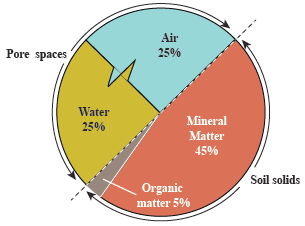

Chapter
Two
The agricultural soil
Introduction
In this chapter, you will learn about the concept of agricultural soil as well as the physical, chemical and biological properties of soil in relation to crop plant growth. You will also learn about the soil health. The competencies developed will enable you to manage the influence of soil on the growth and development of crop plants including animal feeds.
“The lifeblood of agriculture, fuels plant growth and sustains ecosystem”
The concept of agricultural soil
Soil can have different meanings in different fields such as engineering or farming. Soil is very important for life on earth. In agriculture, soil is the topmost part of the earth that naturally or with some modification provides nutrients to plants. It also provides support to the plants.
Components of soil
Soil is composed of different components such as mineral matter, organic matter, water, air, and living organisms. The solid part of the soil consists of mineral matter and organic matter, making up about half (50%) of the soil. The other half of the soil is occupied by spaces called pore spaces. These are large pore spaces which are normally filled with air (about 25%) and small pore spaces filled with water (about 25%) (refer to Figure 2.1).
